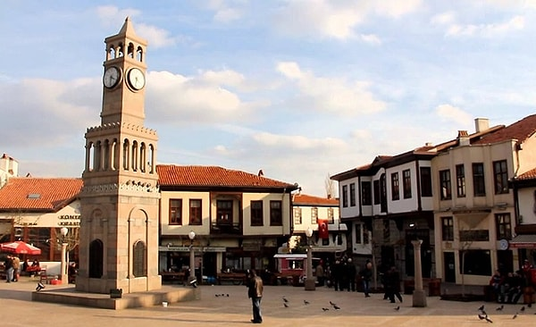
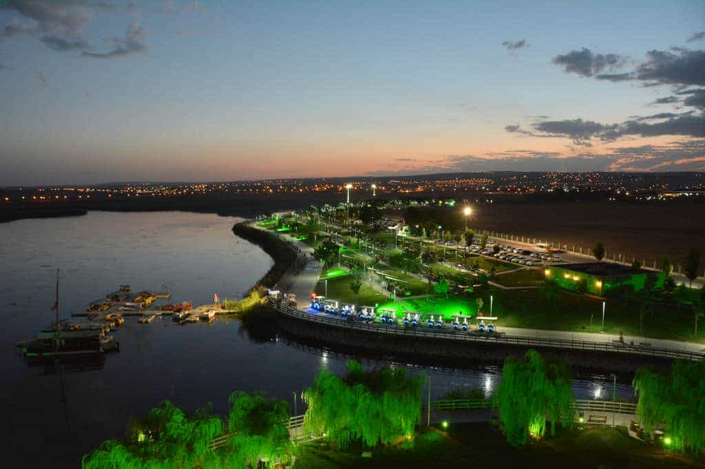
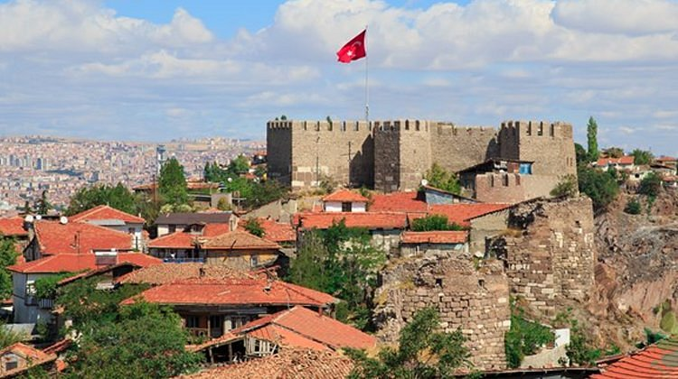
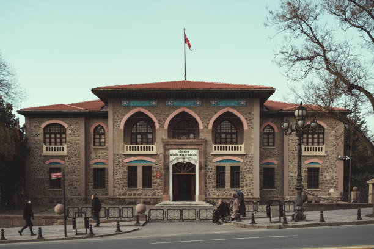
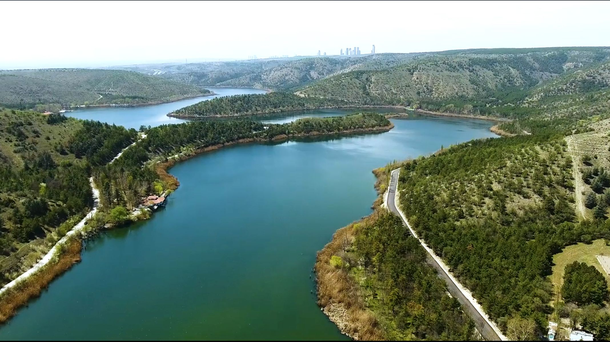
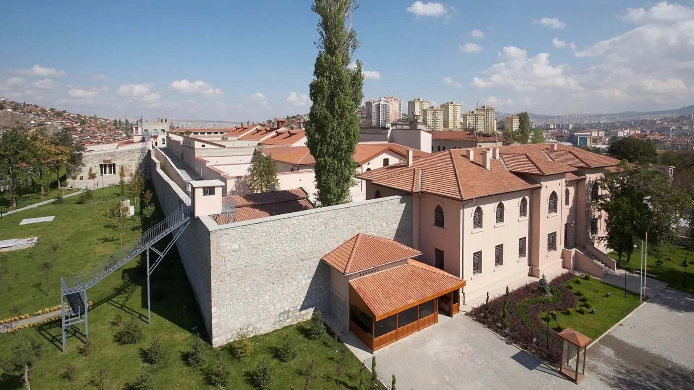

Anıtkabir
Türkiye Cumhuriyetinin kurucusu Mustafa Kemal Atatürk'ün anıt mezarı.

Atakule
Ankara'nın simgelerinden biri olan ve şehri kuşbakışı izleyebileceğiniz kule.

Hamamönü
Tarihi Ankara evlerinin restore edilerek turizme kazandırıldığı bölge.

Mogan Gölü
Mogan Gölü, Ankara'nın Gölbaşı ilçesinde yer alan, çevresindeki geniş rekreasyon alanları, sevgi yolu ve zengin kuş popülasyonuyla başkentlilerin doğayla buluştuğu önemli bir set gölüdür.

Ankara Kalesi
Şehir merkezinde yer alan ve tarihi önemi olan kale.

Türkiye Büyük Millet Meclisi
Ülkemizin demokratik yönetiminde önemli bir yeri olan ve tarihi önemi olan meclis binası.

Eymir Gölü
Eymir Gölü, Ankara'nın Gölbaşı ilçesinde bulunan, ODTÜ arazisi içinde yer alan ve çevresindeki doğal bitki örtüsüyle özellikle yürüyüş, bisiklet ve kürek sporları için tercih edilen sakin bir doğa alanıdır.

Ulucanlar Cezaevi Müzesi
Ulucanlar Cezaevi Müzesi, Türk siyasi ve edebi tarihinin önemli isimlerinin kaldığı, günümüzde ise geçmişin izlerini sergileyen bir müze ve kültür sanat merkezine dönüştürülmüş eski bir infaz kurumudur.